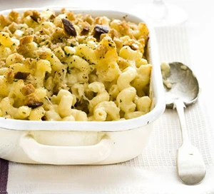

Macaroni Cheese

Discription:
This perfect baked macaroni cheese recipe comes with a creamy cheese sauce.
A hint of mustard and uses leftover French stick for its crunchy topping
Ingredients:
- 1 (12 ounce) package macaroni
- 1 egg
- 2 cups milk
- 2 tablespoons butter, melted
- salt and pepper to taste
Steps:
- Prepare pasta according to package directions. Keep warm.
- Melt butter in a large saucepan or Dutch oven over medium-low heat; whisk in flour until smooth. Cook, whisking constantly, 2 minutes. Gradually whisk in milk, and cook, whisking constantly, 5 minutes or until thickened. Remove from heat. Stir in salt, black and red pepper, 1 cup shredded cheese, and cooked pasta.
- Spoon pasta mixture into a lightly greased 2-qt. baking dish; top with remaining 1 cup cheese.
- Bake at 400° for 20 minutes or until bubbly. Let stand 10 minutes before serving.
- One-Pot Macaroni and Cheese: Prepare recipe as directed, stirring all grated Cheddar cheese into thickened milk mixture until melted. Add cooked pasta, and serve immediately. Prep: 10 min., Cook: 7 min.